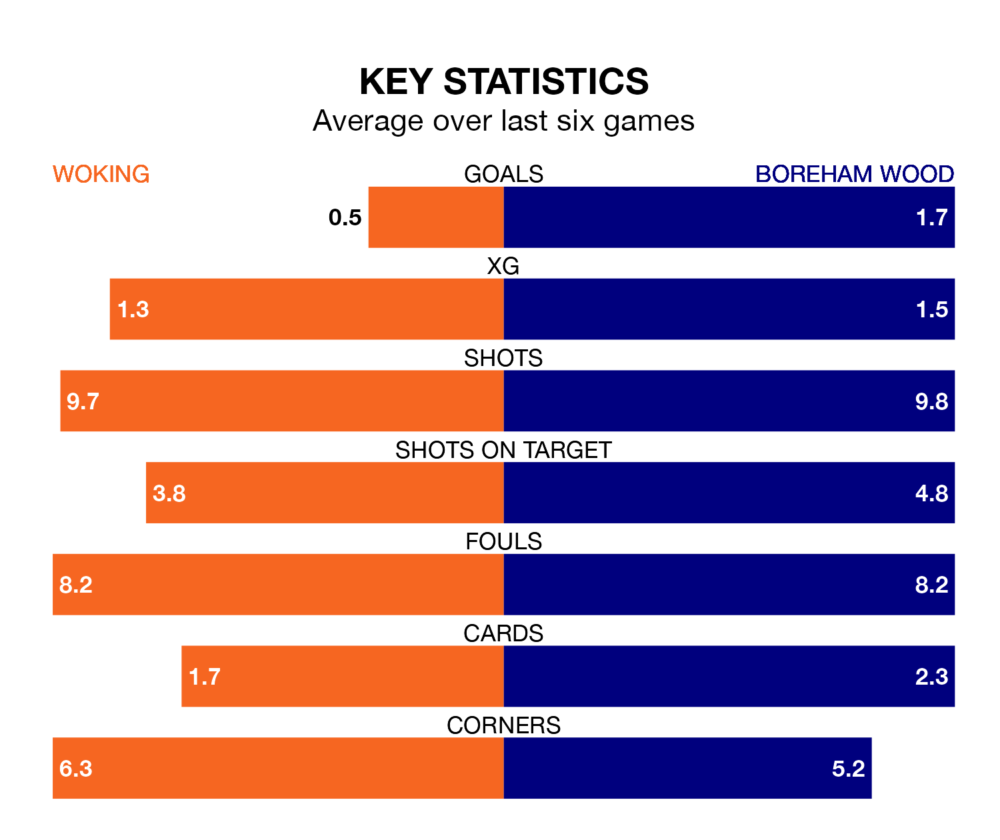

Boreham Wood travel to Woking on Saturday in National League.
The visitors come into the game on the back of a defeat in their last match, having lost to Dorking Wanderers 3-0 at home.
The Cardinals, meanwhile, won their last match, 1-0 against Oldham Athletic, with their goal scored by Jermaine Barrington Anderson.
In the last 10 years, Woking and Boreham Wood have played each other on 16 occasions. Woking won three of them, Boreham Wood seven, and they drew six times.
On average, the Cardinals scored 0.8 goals and the Wood 1.1 in those matches.
Their last meeting was on November 25, when Boreham Wood won 4-2 at home.
Woking are 20th in the table after 29 games, of which they have won eight and drawn six, earning 30 points.
Boreham Wood are two places ahead of the Cardinals in 18th, with seven wins and 13 draws putting them on 34 points.
The home side are in disappointing form in National League, with one win and two draws from their last six games.
With a win and four draws over that period, the Wood's form is slightly better – they have taken seven points from 18, compared to Woking's five.
With 29 goals in 29 games so far this season, Woking are the league's second-lowest scorers with 1.0 goals per game. But they are conceding fewer than average too, letting in 38 goals at a rate of 1.3 per game.
The visitors are also below average scorers, with 1.3 goals per game, compared to a league average of 1.5. They have conceded 1.7 goals per game.
Updated: 15:45 (UTC), 02/02/24